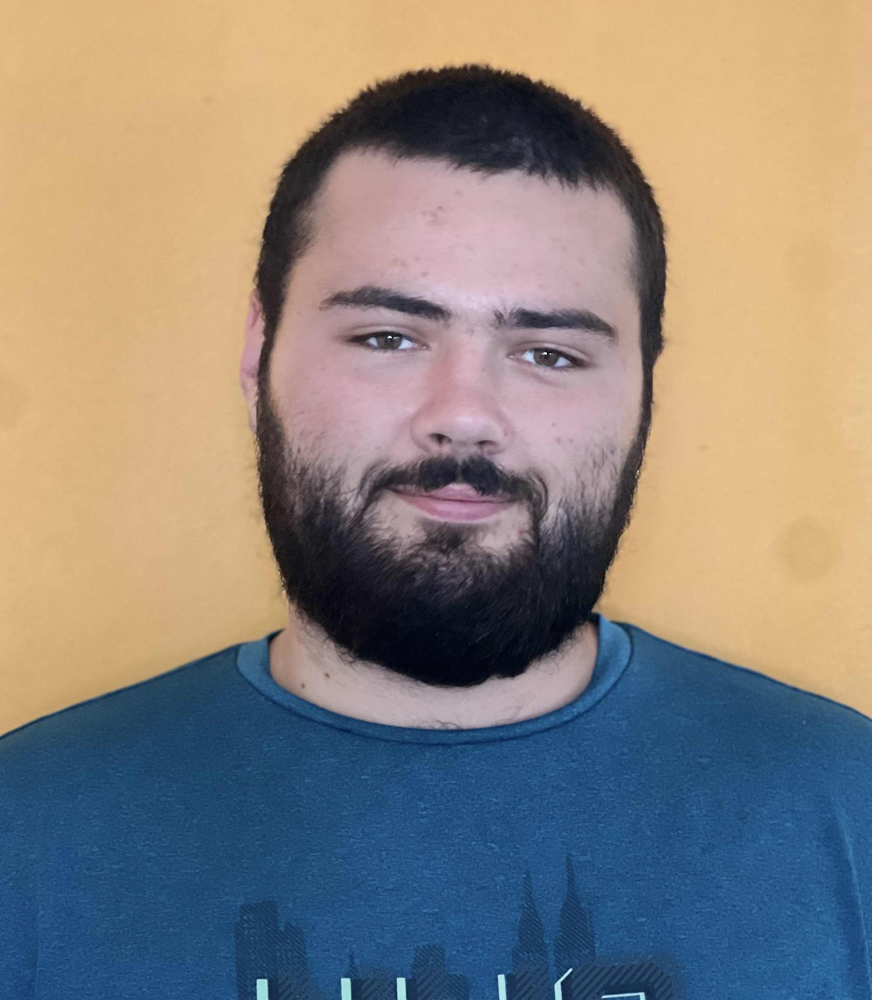

Je m'appelle Rémi Soulier, j'ai 21 ans et je suis étudiant en BTS SIO (Services Informatiques aux Organisations) au sein de l'école My Digital School. Je réalise mon bts en alternance au sein du service informatique de la Communauté de Communes du Grand Pic St Loup. Dans le cadre de mon BTS SIO, j'ai choisi l'option SLAM (Solutions Logicielles et Applications Métiers) qui me permet de me spécialiser dans le développement d'applications.
J'ai toujours été passionné par l'informatique et les nouvelles technologies et c'est pour cela que j'ai choisi de m'orienter dans ce domaine. J'ai déjà réalisé plusieurs projets personnels et professionnels qui m'ont permis de développer mes compétences en développement web et mobile.
En dehors de l'informatique, je suis passioné de sport. Je suis engagé au sein de mon club de basket depuis 10 ans où j'ai pu évoluer en tant que joueur et entraineur. je fais également de la force athlétique depuis 2 ans et j'ai pour objectif de participer aux championats de france.